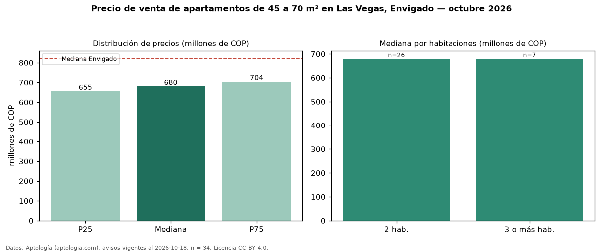

Precio de venta de apartamentos de 45 a 70 m² en Las Vegas, Envigado — octubre 2026
Con 34 avisos vigentes, el precio mediano de apartamentos de 45 a 70 m² en venta en Las Vegas, Envigado es COP 680 millones. Eso es 11 % menos que la mediana de todos los apartamentos en venta de Las Vegas (COP 760 millones, n = 130); este segmento reúne el 26 % de esos avisos. Por metro cuadrado, la mediana es COP 10,86 millones/m² (n = 33), 6 % por encima del conjunto de referencia (COP 10,22 millones/m²). El área mediana anunciada es 62 m². El segmento con más oferta es el de 2 habitaciones (26 avisos, mediana COP 680 millones); pasar de 2 habitaciones a 3 o más habitaciones cambia la mediana +0 %. El estrato más frecuente es 5 (53 % de los avisos con estrato). La mediana de todos los apartamentos en venta de Envigado es COP 820 millones (−17 % de diferencia). La mitad central de los avisos va de COP 655 millones a COP 704 millones (razón 1,1), una dispersión baja. Datos: Aptología (aptologia.com), CC BY 4.0 — https://www.aptologia.com/venta/envigado/las-vegas. Archivos: PDF, CSV con las cifras y gráfica PNG.

| Avisos únicos | 34 |
|---|---|
| Percentil 25 | COP 655.000.000 |
| Mediana | COP 680.000.000 |
| Percentil 75 | COP 703.750.000 |
| Mediana por m² | COP 10.862.903 |
Fuente: avisos vigentes de portales inmobiliarios recopilados por Aptología, deduplicados (mínimo 30 avisos únicos por celda). Precios pedidos, no cerrados. Fecha: 2026-10-18.